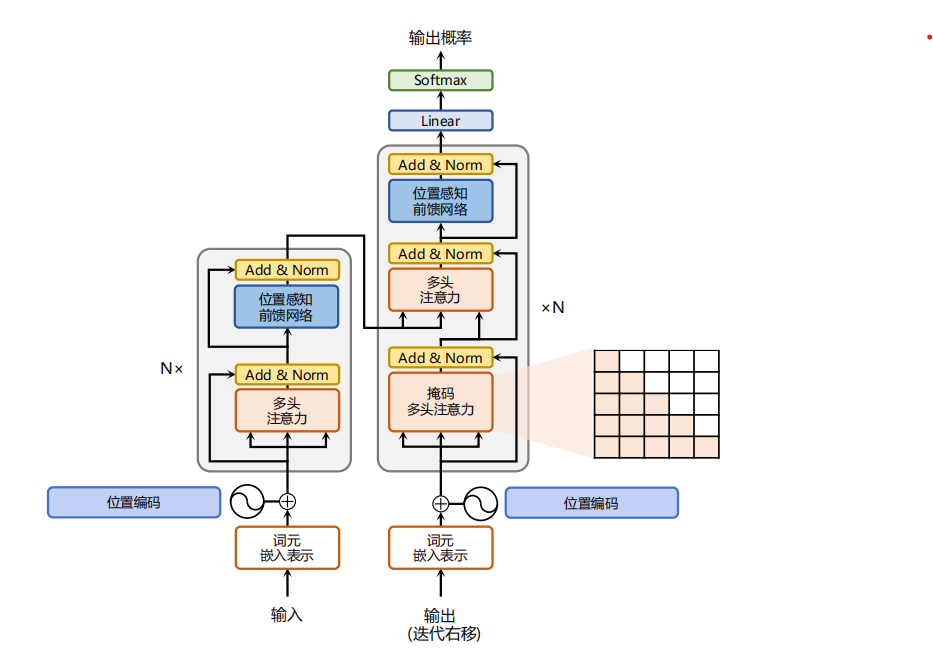
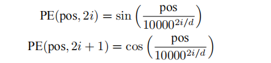
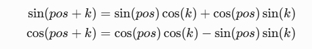

Transformer
# Transformer 四层结构
Transformer 结构：

-
嵌入表示层
Transformer 的自注意力机制是并行处理所有书如此，无法区分语序，所以需要进行位置编码，做法：先为每个单词生成向量嵌入表示，对每个单词所在位置对应一个位置向量，将两个向量进行相加。位置向量的生成公式如下：

根据位置的就选择正弦余弦函数进行计算，这个计算是对每个单词里面的向量的每一维都进行计算，代码如下所示：
1
2
3
4
5
6
7
8
9
10
11
12
13
14
15
16
17
18
19
20#transformer位置编码
class PositionalEncoder(nn.Module):
def __init__(self, d_model,max_seq_len = 80):
super().__init__()
self.d_model = d_model
# 根据pos和i创建一个常量PE矩阵
pe = torch.zeros(max_seq_len, d_model)
for pos in range(max_seq_len):
for i in range(0, d_model, 2):
pe[pos, i] = math.sin(pos / (10000 ** (i/d_model)))
pe[pos, i + 1] = math.cos(pos / (10000 ** (i/d_model)))
pe = pe.unsqueeze(0) #形状 (1, seq_len, d_model)
self.register_buffer('pe', pe) #将 pe 保存为模型的一部分（不参与梯度更新，但会随模型保存/加载）
def forward(self,x):
#x:(batch_size, seq_len, d_model)
seq_len = x.size(1)
x = x + self.pe[:,:seq_len].cuda()
return x使用正余弦的原因是，函数的范围是 [-1，1] 与词向量相加不会太偏离原始语义，同时第 pos+k 个位置的编码是第 pos 个位置编码的线性组合（根据三角函数和角公式决定），这就蕴含了单词之间的距离信息：

-
自注意力层
自注意力机制，即自己作为 QKV 进行计算，但是解码器有两个注意力模块，一个是掩码多头，一个是交叉多头注意力，但是原理其实和下面代码差不多，直接用代码展示比较能说明：
1
2
3
4
5
6
7
8
9
10
11
12
13
14
15
16
17
18
19
20
21
22
23
24
25
26
27
28
29
30
31
32
33
34
35
36
37
38
39
40
41
42
43
44
45
46
47
48
49
50
51
#transformer多头自注意力机制
class MultiHeadAttention(nn.Module):
def __init__(self, heads, d_model,dropout = 0.1):
super().__init__()
self.d_model = d_model
self.h = heads
self.d_k = d_model // heads
self.q_linear = nn.Linear(d_model,d_model)
self.k_linear = nn.Linear(d_model,d_model)
self.v_linear = nn.Linear(d_model,d_model)
self.dropout = nn.Dropout(dropout)
self.out = nn.Linear(d_model,d_model)
def attention(q, k, v, d_k, mask = None, dropout = None ):
# 转置k相乘 除以 math.sqrt(d_k) 的操作是缩放点积注意力，防止点积数值过大
scores = torch.matmul(q,k.transpose(-2,-1)) / math.sqrt(d_k)
if mask is not None:
mask = mask.unsqueeze(1)
scores = scores.masked_fill(mask == 0, -1e9) #掩盖那些为了补全长度而增加的单元，使其通过Softmax计算后为0
scores = F.sofmax(scores,dim=-1)
if dropout is not None:
scores = dropout(scores)
output = torch.matmul(scores,v)
return output
def forward(self, q, k, v, mask = None):
batch_size = q.size(0)
# 利用线性计算划分成h个头
q = self.q_linear(q).view(batch_size,-1,self.h,self.d_k)
k = self.k_linear(k).view(batch_size,-1,self.h,self.d_k)
v = self.v_linear(v).view(batch_size,-1,self.h,self.d_k)
#转置头和seq_len位置
k = k.transpose(1,2)
q = q.transpose(1,2)
v = v.transpose(1,2)
scores = self.attention(q, k, v, self.d_k, mask, self.dropout)
# 拼接多头输出并线性变换
concat = scores.transpose(1, 2).contiguous().view(batch_size, -1, self.d_model)
output = self.out(concat)
return output -
前馈层
接收注意力层的输出，通过带有 ReLU 的 2 层全连接网络，第一层会映射到高纬度，因为隐藏层维度的增大有利于提高质量（实验证明）：
1
2
3
4
5
6
7
8
9
10
11
12
13
14#前馈层
class FeedForward(nn.Module):
def __init__(self, d_model, d_ff = 2038, dropout = 0.1):
super().__init__()
self.linear1 = nn.Linear(d_model, d_ff)
self.dropout = nn.Dropout(dropout)
self.linear2 = nn.Linear(d_ff,d_model)
def forward(self, x):
x = self.dropout(F.relu(self.linear1(x)))
x = self.linear2(x)
return x -
残差连接和归一化
由 Transformer 结构组成的网络结构通常都非常庞大。编码器和解码器均由很多层基本的 Transformer 块组成，每一层中都包含复杂的非线性映射，这就导致模型的训练比较困难。因此，研究人员在 Transformer 块中进一步引入了残差连接与层归一化技术，以进一步提升训练的稳定性。具体来说，残差连接主要是指使用一条直连通道直接将对应子层的输入连接到输出，避免在优化过程中因网络过深而产生潜在的梯度消失问题。
# 解码器与编码器
编码器端较容易实现。相比于编码器端，解码器端更复杂。具体来说，解码器的每个 Transformer 块的第一个自注意力子层额外增加了注意力掩码，对应图中的掩码多头注意力部分。这主要是因为在翻译的过程中，编码器端主要用于编码源语言序列的信息，而这个序列是完全已知的，因而编码器仅需要考虑如何融合上下文语义信息。解码器端则负责生成目标语言序列，这一生成过程是自回归的，即对于每一个单词的生成过程，仅有当前单词之前的目标语言序列是可以被观测的，因此这一额外增加的掩码是用来掩盖后续的文本信息的，以防模型在训练阶段直接看到后续的文本序列，进而无法得到有效的训练。此外，解码器端额外增加了一个多头交叉注意力模块，使用交叉注意力方法，同时接收来自编码器端的输出和当前 Transformer 块的前一个掩码注意力层的输出。查询是通过解码器前一层的输出进行投影的，而键和值是使用编码器的输出进行投影的。
解码器端以自回归的方式生成目标语言文本，即在每个时间步 t，根据编码器端输出的源语言文本表示，以及前 t − 1 个时刻生成的目标语言文本，生成当前时刻的目标语言单词（以我的理解来说，训练阶段是没有显示时间步概念的，通过一次性输入完整序列 + 掩码矩阵，在单次前向传播中并行计算出所有位置的输出，同时利用掩码强制模型行为与自回归一致，而推理时必须显式按时间步生成，因为未来词未知（无法并行））。
# 以推理生成中文翻译 "我爱你" 为例：
| 时间步 | 图 1 中对应的模块流程 | 具体操作 |
|---|---|---|
t=1 |
词元嵌入 → 位置编码 → 掩码多头注意力 → 编码器 - 解码器注意力 → 前馈网络 → Softmax | 输入 <start> ，输出 "我" 的概率分布。 |
t=2 |
词元嵌入 ( <start> 我 ) → 位置编码 → 掩码多头注意力 → … → Softmax |
输入 <start> 我 ，输出 "爱" 的概率分布。 |
t=3 |
词元嵌入 ( <start> 我爱 ) → 位置编码 → … → Softmax |
输入 <start> 我爱 ，输出 "你" 的概率分布。 |
t=4 |
词元嵌入 ( <start> 我爱你 ) → … → Softmax |
输入 <start> 我爱你 ，输出 <end> 的概率分布，终止生成。 |
可参考文章：https://blog.csdn.net/m0_64148253/article/details/140422497